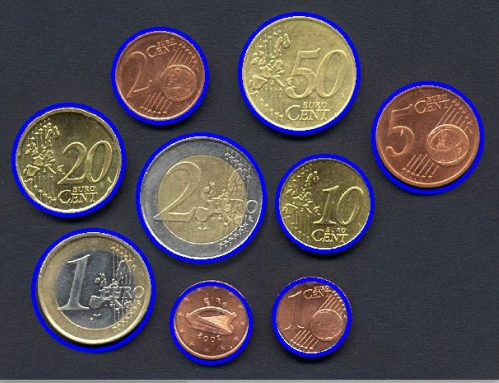

01
CurrencyVision — Coin Detection & Classification
Computer vision project focused on analyzing euro coins from images captured with a smartphone. The first approach uses classical image processing methods to detect, count, and identify coins. A second approach applies Deep Learning and Transfer Learning with AlexNet pre-trained on ImageNet for coin classification.
Python
OpenCV
PyTorch
AlexNet
Transfer Learning
Deep Learning